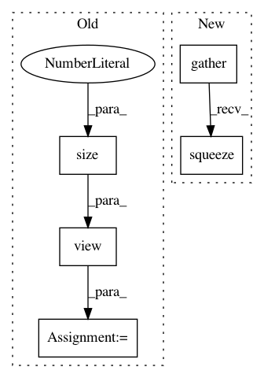

7e72bea839547db89cf555768d209f468f7be3ce,misc/utils.py,LanguageModelCriterion,forward,#LanguageModelCriterion#Any#Any#Any#,57
Before Change
// truncate to the same size
target = target[:, :input.size(1)]
mask = mask[:, :input.size(1)]
input = to_contiguous(input).view(-1, input.size(2))
target = to_contiguous(target).view(-1, 1)
mask = to_contiguous(mask).view(-1, 1)
output = - input.gather(1, target) * mask
output = torch.sum(output) / torch.sum(mask)
After Change
target = target[:, :input.size(1)]
mask = mask[:, :input.size(1)]
output = -input.gather(2, target.unsqueeze(2)).squeeze(2) * mask
output = torch.sum(output) / torch.sum(mask)
return output
In pattern: SUPERPATTERN
Frequency: 3
Non-data size: 5
Instances
Project Name: ruotianluo/self-critical.pytorch
Commit Name: 7e72bea839547db89cf555768d209f468f7be3ce
Time: 2017-10-25
Author: rluo@ttic.edu
File Name: misc/utils.py
Class Name: LanguageModelCriterion
Method Name: forward
Project Name: pcyin/tranX
Commit Name: 65c51a90b9034c934e4f91d6fe35d6a28c3b2f7e
Time: 2018-10-28
Author: pcyin@cs.cmu.edu
File Name: model/seq2seq.py
Class Name: Seq2SeqModel
Method Name: score_decoding_results